Faster Guidewire. Cleaner Pega. One decision.
Migrate your complexity, or design it out
Process Intelligence makes both faster, cleaner, and provable.


Apromore is now a 100% Salesforce affiliate - fully covered under the existing MSA. Contracting in Q2 (May-Jul) on the Apromore order form secures pricing before global standardisation from Q3.
| Component | Vol | Q2 (Apromore) | >Q3 (SFDC Global) |
|---|---|---|---|
| Enterprise Edition Production | 1 | TBC | TBC |
| Analyst Users | TBC | TBC | TBC |
| Viewer Plus Users | TBC | TBC | TBC |
| Task Mining (Concurrent) | TBC | TBC | TBC |
| Conversational Interface & recommendation engine | TBC | TBC | TBC |
| Core licence subtotal | TBC | TBC |
| Senior Process Intelligence Analyst team | TBC | TBC | TBC |
| Certified Process Mining Foundation training | 1 | TBC | TBC |
| SSO & IP whitelisting setup | — | Included | Included |
| Professional services subtotal | TBC | TBC |
A bounded, time-boxed engagement on the next migration wave. QBE sees the process map, the variant reduction analysis, and a simulation of go-live confidence - before the build commits.
Duration: 4 weeks from kick-off
Cost: TBC - bounded fixed price
Deliverables: as-is process map · variant analysis · go-live simulation · executive readout
Decision point: license up at the readout, or walk away
No multi-year commitment. No platform installation in a QBE environment. If the readout doesn't justify the licence, QBE doesn't take it.